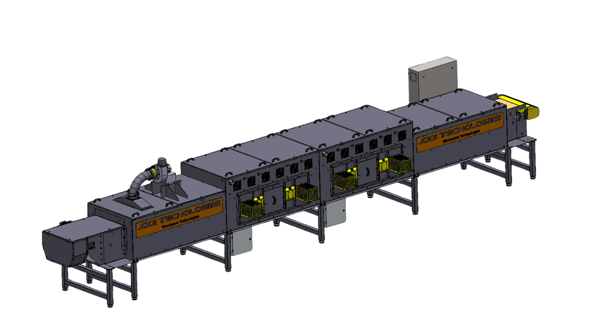

Desde 2009
Experiência em engenharia aplicada a processos industriais de secagem e automação.
Empresa

Experiência em engenharia aplicada a processos industriais de secagem e automação.
Estrutura técnica e comercial para atender diferentes regiões do país.
Diagnóstico, engenharia, fabricação, instalação, comissionamento e suporte técnico.
Quem somos
A JODI Tecnologias é uma empresa brasileira de engenharia industrial especializada no desenvolvimento de equipamentos e sistemas para secagem contínua. Atuamos em aplicações onde a secagem é uma etapa crítica para a produtividade, o custo operacional e a qualidade final do produto.
Mais do que fabricar máquinas, a JODI desenvolve soluções técnicas para desafios reais de processo. Cada projeto considera o produto, a capacidade desejada, a umidade inicial e final, as limitações da linha atual e os objetivos industriais do cliente.
Com equipe técnica, estrutura de engenharia e capacidade de fabricação própria, a JODI acompanha o projeto desde a análise inicial até a implantação em campo, buscando entregar soluções seguras, eficientes e adequadas à realidade operacional de cada indústria.
Como trabalhamos
Cada aplicação possui uma necessidade específica. Por isso, a JODI não trabalha com soluções genéricas. Antes de propor um sistema industrial, avaliamos o produto, o processo atual e os principais desafios da operação.
A partir dessa análise, nossa equipe técnica define a melhor configuração para a aplicação, considerando tecnologia, potência, tempo de residência, controle de temperatura, exaustão, automação, integração com a linha e metas de desempenho.
O objetivo é transformar dados técnicos em uma solução industrial viável, segura e mensurável, reduzindo incertezas e aumentando a confiança na tomada de decisão.
Analisamos o produto, a umidade inicial e final, a capacidade produtiva, o processo atual, os gargalos da linha e os objetivos industriais do cliente. Essa etapa permite entender se a tecnologia da JODI faz sentido para a aplicação e quais caminhos técnicos devem ser considerados.
Com base nas informações levantadas, a equipe de engenharia define a configuração do sistema, incluindo tecnologia aplicada, potência instalada, layout, automação, controle operacional, integração com equipamentos existentes e parâmetros de processo.
Após a definição técnica, a solução é fabricada, instalada e comissionada em campo. A JODI acompanha a partida do equipamento, os ajustes operacionais e a validação do processo, garantindo integração à rotina produtiva com segurança e desempenho.
Onde estamos
Conheça os endereços da matriz e da filial da JODI Tecnologias.
Próximo passo
Entre em contato para conversar sobre sua empresa, seu processo industrial ou uma possível aplicação da tecnologia.